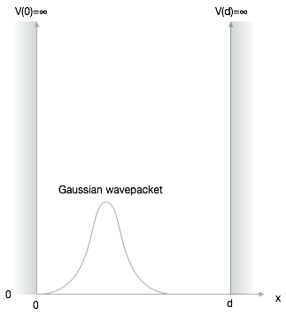

Wavepacket in a Potential Box
In this section, we will explore the time evolution of a wavepacket confined in a potential box with infinite walls. This builds directly on our understanding of stationary states from previous lectures, extending it to show how quantum states evolve dynamically over time.
Problem Setup
We now want to study the dynamics of a particle in a box, extending our previous stationary analysis to understand how a wavepacket evolves over time when confined between two impenetrable walls.

For a potential box with infinite walls and width \(d\), the potential energy inside the box is zero:
\[V(x) = \begin{cases} 0, & 0 < x < d \\ \infty, & \text{otherwise} \end{cases}\]
The time-dependent Schrödinger equation within the box therefore reduces to:
\[\begin{equation}\label{eq:se} -i\hbar\frac{\partial \Psi}{\partial t}=-\frac{\hbar^2}{2m}\frac{\partial^2}{\partial x^2} \Psi \end{equation}\]
Time-Dependent Solution Using Stationary States
Stationary States as a Basis
From our previous work, we know the stationary solutions (energy eigenstates) for this system are standing waves:
\[\begin{equation} \psi_{n}(x) = \sqrt{\frac{2}{d}} \sin \left(\frac{n\pi}{d}x\right), \quad n=1,2,3,... \end{equation}\]
with corresponding energy eigenvalues:
\[\begin{equation} E_n = \frac{\hbar^2 \pi^2 n^2}{2md^2} \end{equation}\]
These stationary states form a complete orthonormal basis, meaning any wavefunction that satisfies the boundary conditions can be expressed as a linear combination of these states. This is how we’ll construct our time-dependent solution.
Constructing the Time-Dependent Solution
The general time-dependent solution can be written as a superposition of the stationary states, each evolving with its own time-dependent phase factor:
\[\begin{equation}\label{eq:psi} \Psi(x,t)=\sum_{n=1}^\infty C_n(t) \sqrt{\frac{2}{d}}\sin\left(\frac{n\pi}{d}x\right) \end{equation}\]
The sine function ensures that the boundary conditions are satisfied: \(\Psi(x=0,t)=0\) and \(\Psi(x=d,t)=0\). The time dependence is contained in the coefficients \(C_n(t)\).
To find these coefficients, we substitute this solution into the time-dependent Schrödinger equation:
\[\begin{equation} i\hbar\sum_{n=1}^\infty \frac{dC_n(t)}{dt} \sqrt{\frac{2}{d}}\sin\left(\frac{n\pi}{d}x\right)=\frac{\hbar^2}{2m}\sum_{n=1}^\infty C_n(t) \sqrt{\frac{2}{d}}\frac{n^2\pi^2}{d^2}\sin\left(\frac{n\pi}{d}x\right) \end{equation}\]
Solving for the Time-Dependent Coefficients
To obtain a differential equation for each coefficient \(C_n(t)\), we multiply both sides by \(\sin\left(\frac{l\pi}{d}x\right)\) and integrate from \(0\) to \(d\). Due to the orthogonality of the sine functions:
\[\begin{equation} \int_0^d \sin\left(\frac{n\pi}{d}x\right) \sin\left(\frac{l\pi}{d}x\right) dx = \frac{d}{2}\delta_{nl} \end{equation}\]
where \(\delta_{nl}\) is the Kronecker delta (equals 1 when \(n=l\), and 0 otherwise).
This gives us a separate differential equation for each coefficient:
\[\begin{equation}\label{eq:deq} \frac{dC_n(t)}{dt}=-i\frac{E_n}{\hbar}C_n(t) = -i\frac{\hbar \pi^2 n^2}{2md^2}C_n(t) \end{equation}\]
The solution to this first-order differential equation is:
\[\begin{equation} C_n(t)=C_n(0) e^{-i\frac{E_n}{\hbar}t} = C_n(0) e^{-i\frac{\hbar \pi^2 n^2}{2md^2}t} \end{equation}\]
where \(C_n(0)\) are the initial coefficients determined by the wavepacket’s shape at \(t=0\).
Complete Time-Dependent Solution
Thus, our complete time-dependent solution is:
\[\begin{equation} \Psi(x,t)=\sum_{n=1}^\infty C_n(0)\sqrt{\frac{2}{d}} e^{-i\frac{\hbar \pi^2 n^2}{2md^2}t} \sin\left(\frac{n\pi}{d}x\right) \end{equation}\]
The physical interpretation is that each energy eigenstate evolves with its own characteristic frequency \(\omega_n = E_n/\hbar\), and their interference creates the time-evolving wavepacket.
Initial Conditions: Gaussian Wavepacket
For our simulation, we’ll use a Gaussian wavepacket as the initial state. While this doesn’t strictly satisfy the boundary conditions at \(t=0\) (the Gaussian extends beyond the box), we’ll choose parameters so that the wavefunction is effectively zero at the boundaries.
For simplicity, we’ll use natural units where \(\hbar=1\) and \(m=1\), and we’ll set the box width to \(d=\pi\).
Here’s a function to create a Gaussian wavepacket:
Let’s visualize this initial wavepacket:
Expressing the Initial State in the Energy Basis
To simulate the time evolution, we need to express our initial Gaussian wavepacket in terms of the energy eigenstates. First, let’s define a function to generate the energy eigenfunctions:
To find the expansion coefficients \(C_n(0)\), we need to calculate the inner product:
\[\begin{equation} C_n(0) = \int_0^d \Psi(x,0) \psi_n(x) dx \end{equation}\]
Let’s implement this using numerical integration:
Now we can calculate the initial coefficients for a certain number of eigenfunctions:
Let’s calculate the coefficients for the first 30 eigenstates:
Time Evolution Function
Now we can implement the time evolution of our wavepacket:
Let’s verify that our expansion correctly reproduces the initial wavepacket:
Quantum Time Evolution: Animation
Now we can visualize how the wavepacket evolves over time. As the wavepacket evolves, it will:
- Spread out due to dispersion (different energy components evolve at different rates)
- Reflect off the box walls
- Interfere with itself after reflections
- Eventually undergo quantum revivals, where the wavepacket periodically returns close to its initial shape
The animation code below demonstrates this evolution:
xp = np.linspace(0, np.pi, 1000)
fig, ax = plt.subplots(1, 1, figsize=(10, 5))
plt.xlim(-0.1, np.pi+0.1)
plt.ylim(0, 0.02)
plt.axvline(x=0, ls='--', color='k')
plt.axvline(x=np.pi, ls='--', color='k')
plt.xlabel('Position x')
plt.ylabel(r'Probability density $|\Psi(x,t)|^2$')
plt.title('Time Evolution of Wavepacket in a Box')
plt.tight_layout()
plt.draw()
background = fig.canvas.copy_from_bbox(ax.bbox)
points = ax.plot(xp, np.abs(w_func(xp, np.pi, c0n, 0))**2)[0]
plt.close()## setup the canvas
canvas = Canvas(width=800, height=380, sync_image_data=False)
display(canvas)for t in np.linspace(0, 4, 1000):
fig.canvas.restore_region(background)
ax.draw_artist(points)
points.set_data(xp, 10*np.abs(w_func(xp, np.pi, c0n, t))**2)
fig.canvas.blit(ax.bbox)
X = np.array(fig.canvas.renderer.buffer_rgba())
with hold_canvas(canvas):
canvas.clear()
canvas.put_image_data(X)
sleep(0.02)Quantum Revivals and Interference
The animation reveals several interesting quantum phenomena:
Wavepacket Dispersion: The wavepacket initially spreads out because different energy components evolve at different rates.
Reflection and Interference: When the wavepacket reaches the boundaries, it reflects and begins to interfere with itself.
Quantum Revivals: After some time, the wavepacket approximately returns to its initial shape. This is a purely quantum phenomenon called a “quantum revival.”
The revival time can be estimated as:
\[\begin{equation} T_{\text{revival}} \approx \frac{4md^2}{\pi\hbar} \end{equation}\]
In our natural units (\(\hbar=1\), \(m=1\), \(d=\pi\)), this gives \(T_{\text{revival}} \approx 4\).
Extensions and Further Exploration
Here are some interesting variations you could explore:
Moving Wavepacket: Modify the initial wavepacket to include non-zero momentum (\(k_0 \neq 0\)) and observe how it bounces back and forth between the walls.
Different Initial Shapes: Try different initial wavepacket shapes, such as a superposition of two Gaussians or a triangular wavepacket.
Finite Potential Barriers: Modify the simulation to have finite potential barriers, which would allow for tunneling.
Time-Dependent Potential: Explore what happens when the box width changes with time (like a piston), which can lead to quantum heating or cooling.
Position Measurements: Simulate the effect of position measurements during the time evolution, which would collapse the wavefunction.
To implement a moving wavepacket, simply set \(k_0\) to a non-zero value in the gauss_x function, representing the initial momentum of the particle:
The real part of this wavefunction would show oscillations due to the momentum term \(e^{ik_0x}\), representing the particle’s motion.